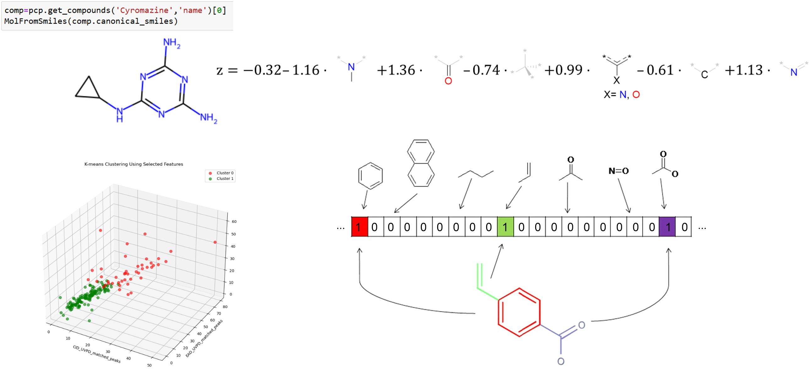
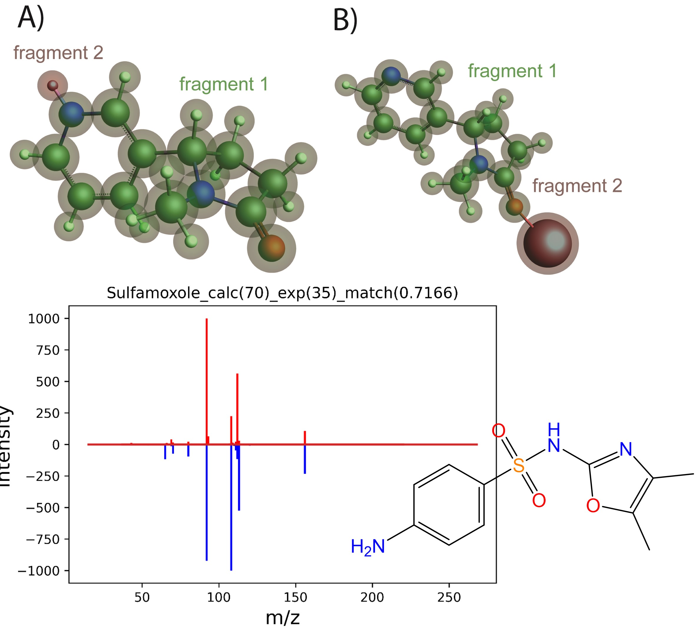
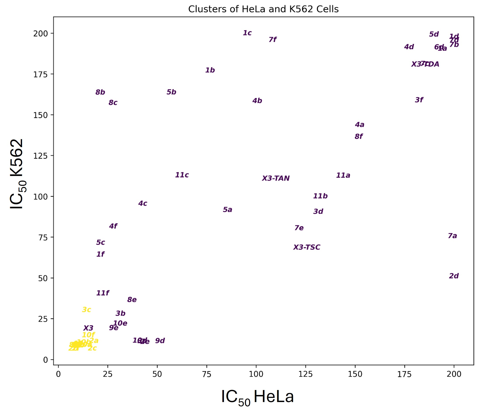
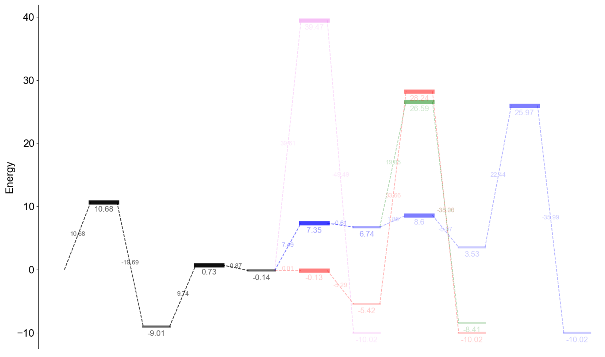

My research bridges cheminformatics, molecular modeling, and machine learning to unravel key patterns in mass spectrometry (MS) data from techniques such as CID, EAD, UVPD, and DMS. By decoding small molecule and peptide behavior, I explore how molecular structures influence adduct formation, ion mobility, and fragmentation profiles across diverse MS settings. This work expands the potential applications of multiomics studies, offering deeper insights into molecular systems.
In molecular modeling, I employ density functional theory (DFT) and energy decomposition analysis (EDA) to rationalize adduct formation. Additionally, I use QCXMS to gain detailed mechanistic insights into electron ionization (EI) and collision-induced dissociation (CID) fragmentation processes.
I am also involved in machine learning-driven computational toxicology projects in collaboration with colleagues in Belgrade. These studies connect molecular structures and physicochemical properties with observed cytotoxicity, utilizing cheminformatics to advance predictive models of biological activity.
In computational catalysis, I currently explore catalytic cycles for innovative single-atom molecular editing and transition metal-based methodologies. Notably, I have uncovered cases where the highest energy barrier in the catalytic cycle is not the rate-limiting step, revealing unexpected insights into reaction mechanisms.
